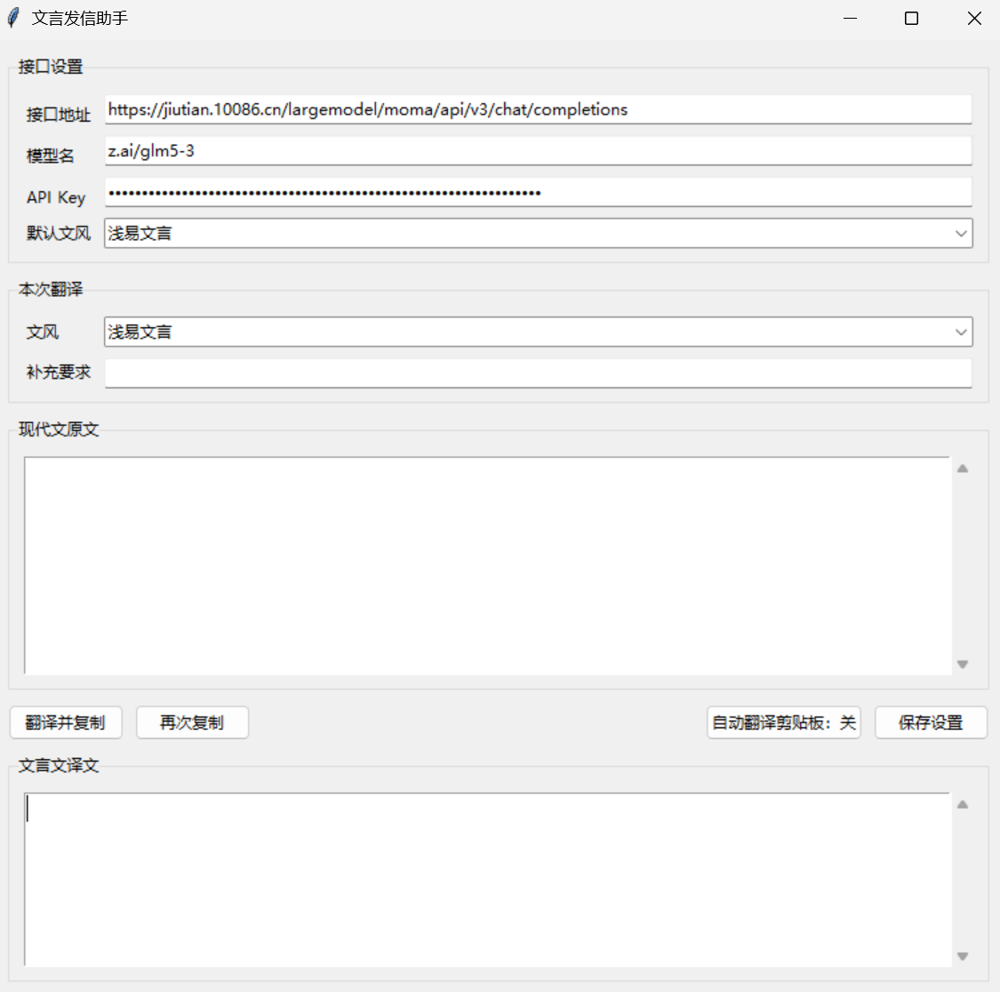

作者：陈桢一（2600013636） 工学院
项目类型：Windows 桌面工具 / 现代汉语到文言文转换
仓库：https://github.com/benzhenpku/WenyanTranslator
最终版本：v2.0（具体 commit 见仓库标签与提交记录）
在微信、QQ 等聊天软件中，偶尔把现代汉语改成文言文会增加表达的趣味，也能作为古典语文学习的辅助练习。手工翻译既慢又容易前后风格不一致，因此本项目把"调用大模型翻译、检查错误、复制到剪贴板"串成一个可重复使用的桌面流程。
项目目标：
本项目不会自动发送消息。它只生成并复制译文，发送动作仍由用户在聊天软件中完成；快捷替换也只是模拟键盘操作，不会绕过聊天软件的发送确认。
Ctrl+Alt+M，程序自动复制、翻译并粘贴回输入框，发送仍由用户手动完成。项目刻意把核心逻辑和界面分开，便于测试和复用：
WenyanTranslator/
├── src/
│ ├── core.py # 提示词、接口地址规范化、HTTP 调用与响应解析
│ ├── config_store.py # 配置读写、日志、读取 CC Switch 接口配置
│ ├── win32_utils.py # Windows 窗口、键盘输入和线程消息工具
│ ├── gui.py # tkinter 界面、线程协调、剪贴板与快捷替换
│ └── __init__.py
├── wenyan_translator.pyw # 极薄的启动入口
├── tests/
│ └── test_wenyan_translator.py # 接口、提示词、异常、配置与边界测试
├── examples/
│ ├── sample_input.txt
│ ├── sample_output.txt # 真实接口运行得到的四文风样例
│ └── config.example.json # 不含 API Key 的配置字段示例
├── docs/
│ └── screenshot_main.png # 实际运行截图
├── README.md
├── README.html # README 的网页版
├── requirements.txt
├── start.bat
├── LICENSE
└── .gitignorecore.py 不依赖 tkinter，因此可以单独导入和测试；GUI 只负责采集配置、调度后台任务和展示结果。这一划分避免了"所有逻辑都写在按钮回调里"的常见问题。
STYLES 是一个字典，保存"文风名称 -> 文风说明"的映射。选择文风时通过 dict 查找，时间复杂度为 O(1)；未知文风会回退到默认文风。构造用户提示词时，把文风说明、补充要求、原文放进带标签的文本块：
文风：典雅文言
文风说明：措辞雅洁，结构工整，略带古典韵致。
补充要求：无
现代文原文：
<original_text>
……
</original_text>系统提示词要求模型只返回译文，不添加解释、标题、引号或代码块，并明确要求保留人名、地名、数字、标点和段落换行。这样可以把"格式约束"和"本次内容"分开，减少把提示词误当成正文的风险。
项目只使用 Python 标准库 urllib.request，不引入第三方依赖。请求流程为：
normalize_endpoint() 补全 /chat/completions；temperature、reasoning_effort 序列化为 UTF-8 JSON；Authorization: Bearer <API Key> 发送 POST；choices[0].message.content，去掉首尾空白；TranslationError。构造请求和读取响应的主要工作量与输入长度 n 成正比，即 O(n)。项目不把 API Key 写进代码、README、测试或 Git；它只保存在本地 config.json，该文件已被 .gitignore 排除。
一次翻译可能需要数秒。如果把 HTTP 调用直接放在 tkinter 主线程，窗口会卡住，用户无法拖动或点击。程序采用：
threading.Thread 在后台执行 HTTP 请求和 JSON 解析；root.after(0, 回调, 结果, 错误)，把回调交给 tkinter 主循环；这样 GUI 的 Tk 对象始终只在主线程中访问，避免跨线程直接操作界面造成随机崩溃。快捷替换时，全局热键线程收到热键消息后同样只调用 root.after(...)，窗口切换和剪贴板操作都由主线程完成。
快捷替换是可选增强功能，涉及以下 Win32 API：
RegisterHotKey / GetMessageW：注册和接收 Ctrl+Alt+M；GetForegroundWindow：识别当前聊天窗口；AttachThreadInput、SetForegroundWindow、SetFocus：切换窗口焦点；SendInput：模拟 Ctrl+C、Ctrl+A、Ctrl+V。程序使用 RegisterHotKey 而不是低级键盘钩子，因为后者在部分环境中会因权限或安全软件失败。快捷键注册失败不会影响核心翻译流程，界面会显示失败状态并提示仍可手动翻译。
配置文件位于项目根目录：
WenyanTranslator/config.json该文件已被 .gitignore 排除，即使误执行 git add . 也不会把 API Key 放进版本历史。
此外，程序启动时如果检测到本机安装了 CC Switch（存在 ~/.cc-switch/cc-switch.db），会读取其中当前启用的 Codex 服务商的接口地址、模型名和 API Key，并覆盖界面中的接口设置；关闭窗口时这些设置会随其他配置一起写入本地 config.json。未安装 CC Switch 时该步骤自动跳过。
配置读写使用 json。读取时只保留已知字段，遇到损坏 JSON 或非对象数据会回退到默认值；写入时直接覆盖。配置读写的时间复杂度与字段数量成正比，字段数固定，因此可视为 O(1)。
本项目不需要 pip install，没有第三方运行依赖。requirements.txt 中明确写明这一点。
在项目根目录双击：
start.bat或使用命令行：
pythonw wenyan_translator.pyw首次启动后，在"接口设置"中填写：
点击"保存设置"。程序下次启动会从 config.json 恢复这些设置。
字段格式可参考 examples/config.example.json。示例文件故意保留空 api_key，不能直接用于请求；真实配置只保存在本地，不进入仓库。
输入：
我今晚不吃饭了。选择"浅易文言"，点击"翻译并复制"，程序会得到类似：
吾今夕不食矣。并自动复制到剪贴板。回到微信或 QQ 输入框按 Ctrl+V 后手动发送即可。

截图展示了程序实际运行时的界面。API Key 在界面中以圆点遮罩显示，没有在仓库中保存或展示真实密钥。
输入见 examples/sample_input.txt，以下是 2026-10-20 使用 GLM 5.3 兼容接口得到的真实输出（每次生成可能有细微差异）：
| 文风 | 实测耗时 | 输出 |
|---|---|---|
| 浅易文言 | 2.53 秒 | 吾今夕不食矣。依昨日会议所定，吾等下周先毕项目风险评估之事，再议立项与否。同僚言其今日告假，因子患病。 |
| 典雅文言 | 2.73 秒 | 吾今夕不食矣。谨依昨日会议之议，吾等来周先竟项目风险评估之事，而后定立项与否。同僚言今日告假，盖稚子抱恙故也。 |
| 庄重文言 | 3.74 秒 | 吾今夕不食矣。依昨日会议所决，吾等于下周先竟项目风险评估之事，而后定其立项与否。同僚言今日告假，以其子抱恙故也。 |
| 艰深古奥 | 2.91 秒 | 吾今夕辍飧矣。昨日之议既决：来旬吾侪当先竟项目度险之事，而后决其立与弗立。同僚言其今日告假，以稚子婴疾故也。 |
完整的分段结果见 examples/sample_output.txt。项目同时保留真实端到端测试记录：在桌面窗口中输入"我今晚不吃饭了，明天再联系。"，点击翻译后界面状态为"已复制，可粘贴到聊天框。"，译文为"吾今夕不食矣，明日再会。"，剪贴板内容与译文一致。
运行命令：
python -m unittest discover -s tests -v2026-10-22 实际运行结果：
Ran 17 tests in 0.018s
OK测试覆盖：
| 类别 | 覆盖内容 |
|---|---|
| 接口地址 | 完整地址、base URL、末尾斜杠、空白 |
| 文风字典 | 四种文风都存在、说明非空 |
| 正常请求 | HTTP 请求体、模型名、reasoning_effort=high、译文去空白 |
| 边界情况 | 空译文、缺少 choices |
| 异常情况 | HTTP 401、网络不可达、响应格式异常 |
| 配置 | 默认值（不读取本机真实配置）、写入后读取内容一致 |
| 系统提示词 | 只返回译文、保留人名地名、保留换行 |
| 用例 | 操作 | 实际结果 |
|---|---|---|
| 启动 | 双击 start.bat |
窗口正常打开 |
| 保存设置 | 填写接口信息后点击保存 | 状态栏提示"设置已保存。" |
| 正常翻译 | 输入现代文并点击"翻译并复制" | 真实接口返回译文，剪贴板同步更新 |
| 空输入 | 不输入内容直接翻译 | 提示"请先输入要翻译的现代文。" |
| 错误 Key | 使用无效 Key 请求 | HTTP 错误被转换为可读提示，剪贴板不被改写 |
| 断网/错误地址 | 使用不可达地址 | 提示无法连接接口 |
| 多段文本 | 输入三段带换行的文字 | 输出保留分段结构 |
| 四文风 | 分别选择四个文风 | 输出风格可区分，见上表 |
模型服务本身会受网络、排队和负载影响，不能把一次耗时当作固定指标。本项目没有使用 low 推理，因为实测中低推理更容易丢掉段落和风格要求；medium 在本机测试中反而出现过 9–24 秒的慢响应。最终统一使用 reasoning_effort=high，在同日四文风真实测试中约 2.5–3.7 秒完成。
使用工具：OpenAI Codex CLI（GPT 模型）、Qoder 智能体，用于代码生成、重构、测试编写和文档排版建议。
AI 参与的环节：
本人完成的设计、取舍与验收：
reasoning_effort=high，并报告四文风实测结果；代表性协作记录：
STYLES 中增加"艰深古奥"说明、补充样例和测试，最终形成四种可比较的输出。reasoning_effort=high，并在报告中保留真实耗时和"服务负载会使耗时波动"的限制，而不是承诺固定速度。验证方法：AI 在本人要求下运行 unittest、真实接口和桌面端流程；本人确认功能范围、文风设置和验收目标。代码、测试输出、四文风样例和截图均来自本次实际运行，没有编造运行记录。提交者仍应亲自复验并能够解释关键代码。
引用与复用的外部资源：无。使用 Python 标准库、tkinter 和 Windows 系统 API；模型接口的使用遵守所用服务的条款。